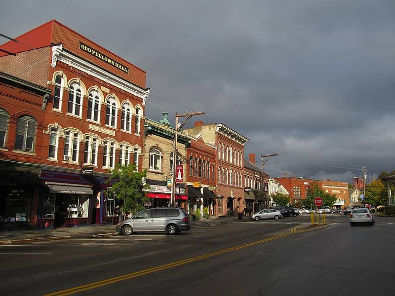

Incident at Exeter
New Hampshire, 1965

Police officers and a teenager reported a large, silent object with red lights. 1
Open in the interactive Watcher
Related
- John G. Fuller Person
Sources
- Exeter incident Wikipedia
New Hampshire, 1965

Police officers and a teenager reported a large, silent object with red lights. 1
Open in the interactive Watcher